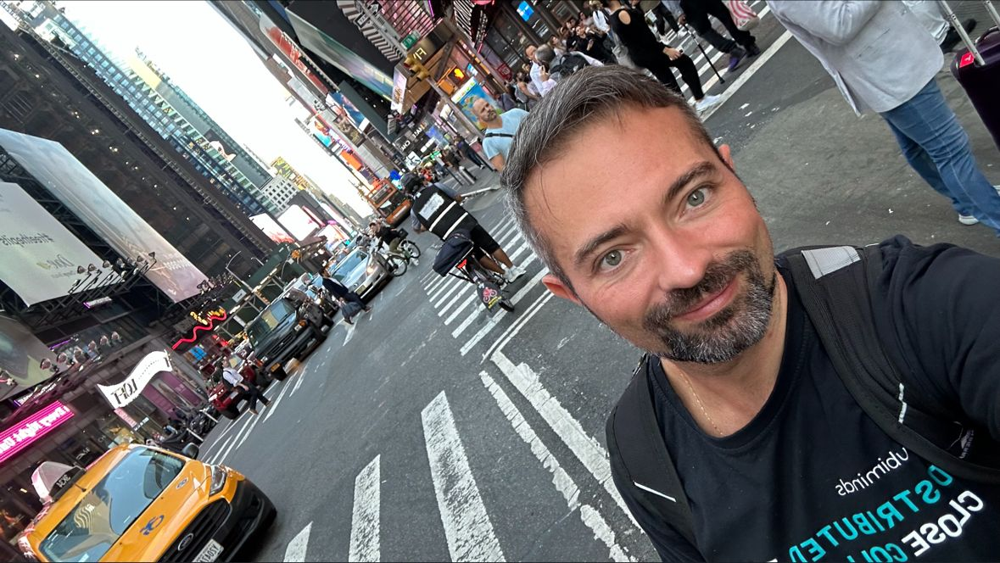
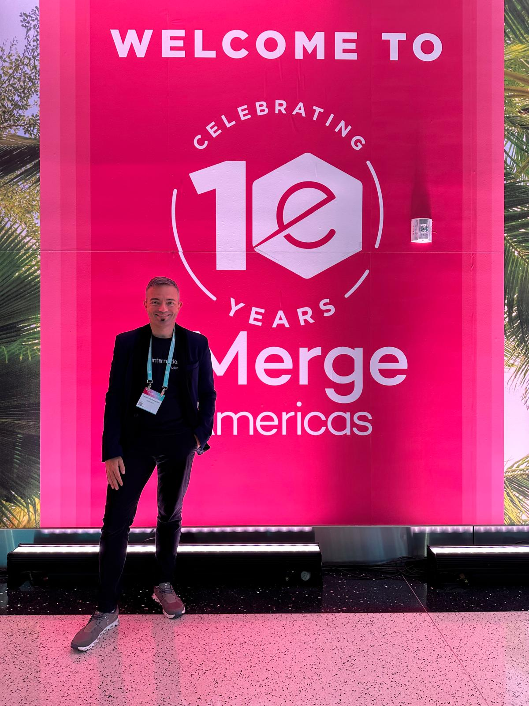
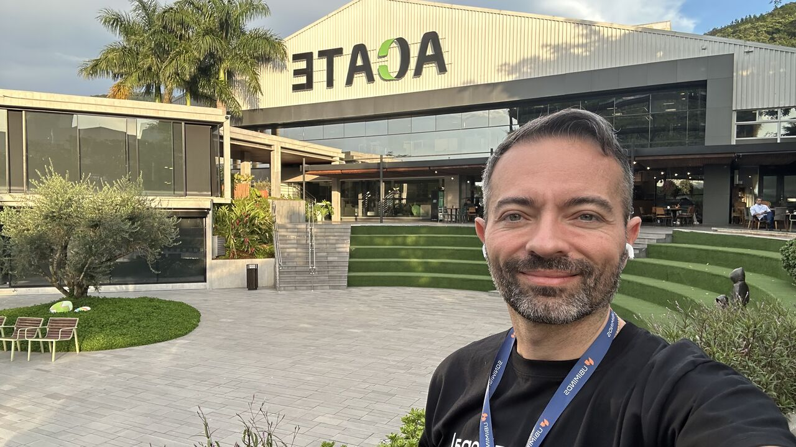
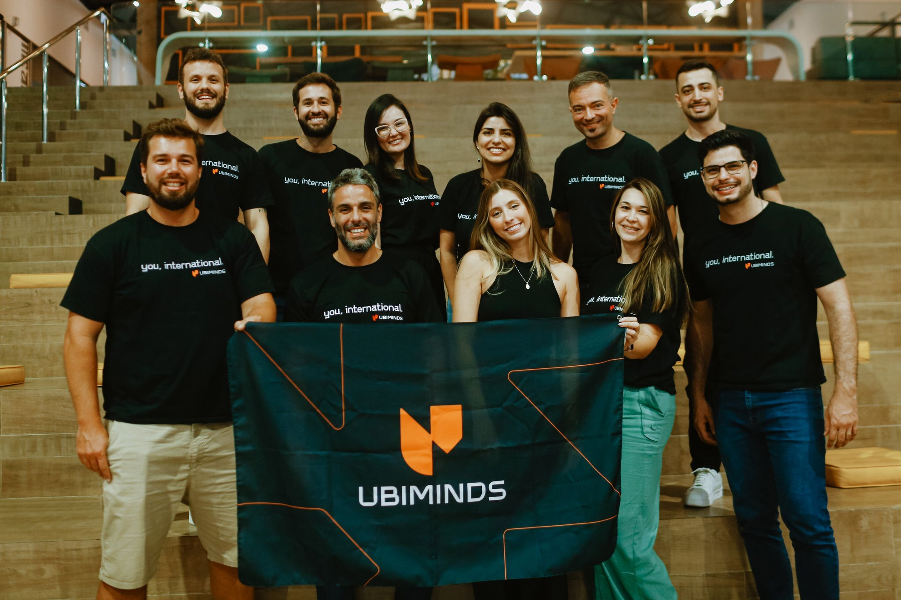

Contexto
A Ubiminds ajuda empresas dos EUA a montar times de engenharia nearshore na América Latina sem precisar abrir uma entidade legal no exterior: "Talent-as-a-Service" para CTOs e VPs de Engenharia que precisam escalar um time técnico rapidamente, com alinhamento cultural e de fuso horário. Liderei a estratégia de go-to-market, geração de demanda e capacitação de vendas para o mercado dos EUA, construindo um time multifuncional que cobria marketing, SDR, eventos e growth entre fusos horários dos EUA e da América Latina.
O desafio
Staff augmentation nearshore é, antes de tudo, uma categoria que depende de confiança. Um CTO que delega autoridade de contratação a um parceiro externo precisa de prova de fit técnico e alinhamento cultural, não só de uma tabela de preços mais baixa. A Ubiminds competia por espaço mental contra players de staffing maiores e mais conhecidos, em um mercado dos EUA onde a marca precisava conquistar credibilidade partindo do zero.
O que construí
Uma presença sustentada em eventos, não uma aparição isolada
Uma presença ao longo do ano-calendário nos eventos onde os compradores de fato aparecem: EdTech Week NY, FETC, TCEA, SXSW 2024, eMerge Americas, Bett Educar e RD Summit: visibilidade repetida e cumulativa, em vez de um investimento único.
Uma propriedade de evento proprietária, não apenas um estande alugado
Em 2024, fiz parte do time fundador que lançou o Connecting the Americas, uma série de eventos que pertence integralmente à Ubiminds, e não mais uma linha em um pacote de patrocínio de terceiros.
Um motor de conteúdo inbound construído em torno dos pontos reais de decisão do comprador
Economia de custo por contratação, estruturação de MSA/SOW, trade-offs entre nearshore e offshore, como gerenciar um time remoto entre culturas. Nove artigos de blog, um e-book de 11 páginas ("Supercharge Your Software Team"), uma apresentação comercial de 26 páginas pronta para vendas de staff augmentation, e outras peças de thought leadership.
Material de vendas e sequências de ABM construídos para uma única persona de comprador
Tudo (a apresentação comercial, o e-book, as sequências de outbound) foi construído em torno do que um CTO ou VP de Engenharia especificamente precisa ver antes de confiar suas contratações a um parceiro de staffing.
O que os clientes disseram
"A really fantastic way to build out the team with highly skilled talent."
Randy Shepherd
CTO, GIPHY
"Everyone feels comfortable challenging ideas to make sure we're building the best thing."
Kaitlyn Clark
Product Lead, NerdWallet
"Ubiminds has been a force multiplier for our business."
Ariel Melendez
CTO, ar.io
"The technical experts have now become leaders on our team."
Willy Husted
Engineering Manager, TryYourBest
"We can rely on Ubiminders to do what we need them to."
Abdullah Jubayer
Cloud Architect, LawnStarter
Depoimentos de clientes dos EUA mantidos no idioma original (inglês), conforme publicados.
Resultados
| Métrica | Resultado |
|---|
| Leads inbound qualificados | 40% de crescimento ao ano: resultado reportado da estratégia de eventos, propriedade própria e conteúdo acima |
| Propriedade de evento própria | Cofundação do Connecting the Americas (2024), em vez de depender apenas de patrocínios de terceiros |
| Biblioteca de conteúdo | Biblioteca completa endereçando os critérios reais de avaliação do comprador técnico |
| Depoimentos nominais de clientes | GIPHY, NerdWallet, ar.io, TryYourBest, LawnStarter |




 Growth Director, América do Norte · Ago 2023 – Abr 2025
Growth Director, América do Norte · Ago 2023 – Abr 2025